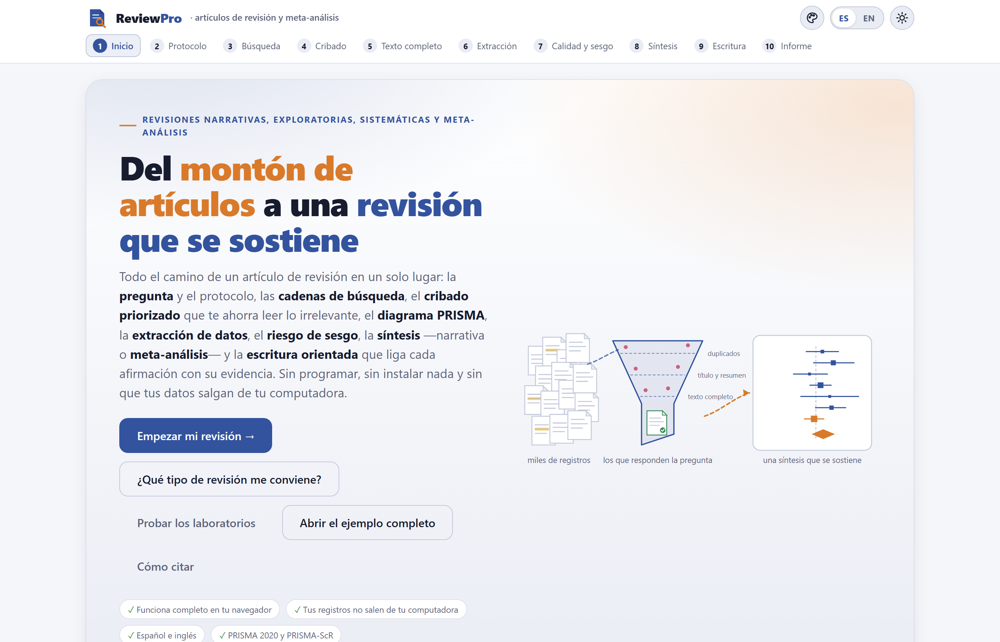
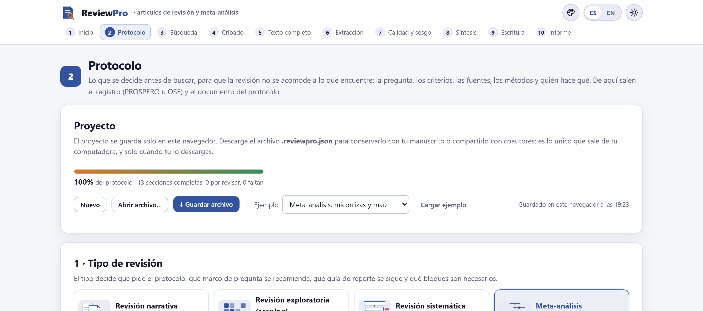

El identificador de objeto digital (DOI) se añadirá a ambas citas cuando la versión 1.0 se archive. Mientras tanto, la cita del programa aparece en la sección Cómo citar de la portada de la app.
ReviewPro funciona por completo dentro de tu navegador. Los registros bibliográficos que importas, tus decisiones de cribado, los datos que extraes y el texto que escribes se guardan en tu computadora y nunca se envían a ningún servidor. Lo único que sale del programa es lo que tú descargas: el archivo del proyecto, las tablas, las figuras, el manuscrito y el paquete. El programa tampoco necesita internet: una vez copiado, funciona con la máquina desconectada.
Las ilustraciones, los diagramas y las capturas de pantalla de este manual son originales: se generaron con el propio programa o con código escrito para el manual. El proyecto de ejemplo con el que se ilustra —un meta-análisis del efecto de la inoculación con hongos micorrízicos arbusculares sobre el rendimiento de grano del maíz— es ficticio: los registros, los estudios, las revistas, los datos y los revisores se generaron para enseñar a usar el programa y no describen investigaciones reales. La única persona con nombre propio que aparece en él, Josiah Carberry, es la identidad de prueba pública de la documentación de ORCID; los identificadores DOI del ejemplo usan el prefijo 10.5555, reservado para pruebas.
El manual sigue el mismo orden que la app: diez bloques numerados que se recorren de izquierda a derecha en la barra de arriba. Cada capítulo explica un bloque y lleva su mismo número —el capítulo 5 es el Bloque 5, y sus secciones, figuras y tablas se numeran 5.1, 5.2…—. Cada uno empieza con la idea metodológica que el bloque necesita, sigue con lo que la pantalla hace y cómo se lee, y termina con los avisos que el bloque puede mostrar y qué hacer con ellos. Esta introducción no lleva número: sus secciones van como I.1, I.2…
El color del bloque aparece en la apertura de su capítulo, en el número de cada sección, en la pestaña del borde de la hoja y en el índice, y es el mismo de la franja de la portada. Así sabes de un vistazo en qué parte de la app estás.
| Bloque | Nombre en la app | Qué hace |
|---|---|---|
| 1 | Inicio | Portada, los cuatro tipos de revisión con su ruta, un asistente de cinco preguntas, dos laboratorios que calculan de verdad, la teoría en lenguaje claro y las referencias |
| 2 | Protocolo | El proyecto, la pregunta con su marco (PICO, PECO, PCC, SPIDER), los criterios, los desenlaces, las fuentes, los métodos, el equipo y el cronograma; la revisión con PRISMA-P y el registro en PROSPERO u OSF |
| 3 | Búsqueda | La cadena por bloques de conceptos, escrita en cinco sintaxis; la bitácora de cada fuente; la importación de seis formatos; los duplicados; la prueba con artículos conocidos |
| 4 | Cribado | Título y resumen con atajos de teclado, priorización por aprendizaje activo, reglas de paro, doble revisión ciega, kappa y conciliación |
| 5 | Texto completo | Dónde está cada PDF, lo encontrado por otras vías, la elegibilidad con su motivo de exclusión y el diagrama de flujo PRISMA 2020 armado con los conteos reales |
| 6 | Extracción | El formulario que diseñas, la extracción por revisor, la calculadora de tamaños de efecto, la comparación de la extracción doble y las tablas finales |
| 7 | Calidad y sesgo | Riesgo de sesgo por dominios con la lista agronómica (u otras herramientas), la conciliación, los gráficos de semáforo, la certeza GRADE y el resumen de hallazgos |
| 8 | Síntesis | El meta-análisis multinivel (o el promedio por estudio), la heterogeneidad, los moderadores, la sensibilidad y el sesgo de publicación; y la síntesis sin meta-análisis |
| 9 | Escritura | El manuscrito por secciones, con citas y datos vivos, el verificador de afirmaciones, la lista PRISMA o SANRA y la exportación a Word, HTML y Markdown |
| 10 | Informe | El estado del proyecto, las figuras numeradas, el informe que se lee solo y el paquete .zip que reproduce la revisión entera |
Aclaraciones y consejos prácticos que ahorran tiempo.
Lo que puede cambiar tus conclusiones si se pasa por alto.
La idea detrás de un paso o de un cálculo, sin fórmulas innecesarias.
Un caso con el proyecto de ejemplo del programa, paso a paso.
| Si el resultado cae en este caso… | entonces esta es la lectura recomendada. |
Son guías para decidir y para interpretar, no leyes: lo que sabes del tema, de los estudios y de tu pregunta siempre manda.
| Así se escribe | Significa |
|---|---|
| Empezar mi revisión → | Un botón, casilla o menú de la app, con su texto tal como aparece en pantalla en español. |
| Bloque 8›Sesgo de publicación | Una ruta: abre lo primero y dentro busca lo segundo. |
[@Cruz2021], {{n.included}}, .reviewpro.json | Algo que se escribe tal cual: una cita, un dato vivo, un nombre de archivo o de campo. |
| lnRR · IC 95 % · IP · I² · τ² | El logaritmo de la razón de respuesta, el intervalo de confianza al 95 %, el intervalo de predicción, la heterogeneidad relativa y la varianza entre estudios. |
| +16.9 % · 0.156 · 1,480 | Los efectos en lnRR se leen como cambio porcentual; los decimales llevan punto y los millares coma, como en la app. |
| registro · informe · estudio | Un registro es una ficha bibliográfica; un informe, un documento (artículo, tesis, resumen de congreso); un estudio, una investigación, que puede tener varios informes. PRISMA 2020 los distingue y la app también. |
Todos los resultados que aparecen en el texto se obtuvieron abriendo en la app el proyecto de ejemplo completo —el botón Abrir el ejemplo completo de la portada— y se copiaron de la pantalla. Si lo abres tú, debes ver los mismos números: el ejemplo es un archivo fijo y todos los cálculos son deterministas. Donde un capítulo usa otra cosa —el protocolo de ejemplo de una revisión exploratoria, los laboratorios del Bloque 1— lo dice antes de dar la cifra.
Qué es el programa, qué tipos de revisión cubre, qué recibe y qué entrega, y cómo se recorre de principio a fin. Incluye las cinco ideas que sostienen todo lo demás —se decide antes de buscar, todo queda registrado, el modelo ordena pero no decide, el promedio no basta y la app orienta pero no redacta— y una lista honesta de lo que el programa no hace.
ReviewPro es una plataforma para hacer un artículo de revisión de la pregunta al manuscrito: fija la pregunta y el protocolo antes de buscar, escribe las cadenas de búsqueda en la sintaxis de cada base, junta y depura los registros, ordena el cribado para que lo relevante aparezca primero, lleva la cuenta de cada exclusión hasta el diagrama PRISMA, extrae los datos y calcula los tamaños de efecto, evalúa el riesgo de sesgo y la certeza, combina los estudios —con o sin meta-análisis— y acompaña la escritura hasta un documento de Word con sus citas y sus referencias.
Todo ocurre dentro del navegador. No hay que instalar nada, no se necesita saber programar y los datos no salen de la computadora. Está escrito para investigadores, profesores y tesistas de las ciencias agrícolas y biológicas, pero sirve para cualquier campo: sabe que la mayoría de las revisiones agronómicas combinan experimentos de campo con varios sitios o ciclos por estudio, que las medias vienen con la DMS o el error estándar en vez de la desviación estándar, que el riesgo de sesgo de un ensayo de campo no se evalúa con la misma lista que un ensayo clínico, y que lo que el lector necesita saber no es solo si un tratamiento funciona en promedio, sino qué pasaría en un sitio nuevo.

No todas las revisiones piden lo mismo. La app distingue cuatro, y el tipo que eliges en el protocolo decide qué marco de pregunta se recomienda, qué guía de reporte se sigue, qué bloques son necesarios y cómo es el esqueleto del manuscrito (Grant y Booth 2009).
| Tipo | Cuándo conviene | Guía de reporte | Bloques necesarios | Tiempo típico |
|---|---|---|---|---|
| Narrativa | Estado del arte, marco conceptual de un proyecto, tema emergente o muy amplio, debate entre escuelas. | SANRA (Baethge et al. 2019) | 2, 3, 6, 8, 9, 10 opcionales 4, 5, 7 | 1 a 3 meses |
| Exploratoria (scoping) | Mapear un campo antes de una revisión sistemática, identificar conceptos y métodos, detectar vacíos de investigación. | PRISMA-ScR (Tricco et al. 2018) | 2 a 6, 8, 9, 10 opcional 7 | 3 a 9 meses |
| Sistemática | Una pregunta focalizada (PICO o PECO) que pide una respuesta defendible y auditable. | PRISMA 2020 (Page et al. 2021) | 2 a 10 | 6 a 18 meses |
| Meta-análisis | Una revisión sistemática cuyos estudios reportan efectos comparables (medias, DE y n; conteos; correlaciones). | PRISMA 2020 + certeza GRADE | 2 a 10 | 6 a 18 meses |
No es el número de artículos ni el tono. Una revisión es sistemática cuando otra persona, con tu protocolo, llegaría a los mismos estudios: la pregunta y los criterios se fijan antes de buscar, la búsqueda se documenta al carácter, cada exclusión tiene un motivo registrado y la calidad de cada estudio se evalúa con una herramienta declarada. La exploratoria comparte ese rigor en la búsqueda, pero su producto es un mapa, no una respuesta. El meta-análisis es una técnica estadística que se aplica dentro de una revisión sistemática cuando los efectos son comparables; sin la sistemática debajo, solo promedia con precisión una muestra sesgada.
| 1 · Se decide antes de buscar | La pregunta, los criterios, los desenlaces, los moderadores y el plan de síntesis se escriben en el protocolo (Bloque 2) antes de ver un solo resultado. Es lo que impide que la revisión se acomode a lo que encuentra, y es lo primero que un revisor escéptico busca. |
| 2 · Todo queda registrado | Cada cadena con su fecha, cada duplicado fusionado, cada decisión de cada revisor con su motivo, cada valor extraído y de dónde salió, cada juicio de sesgo. De ahí salen los números del diagrama PRISMA y el paquete que reproduce la revisión. |
| 3 · El modelo ordena, no decide | La priorización del cribado aprende de tus decisiones y sube a la cima lo que se parece a lo que incluiste, pero no excluye nada. Parar antes de leer todo es una decisión tuya, con una regla declarada y una verificación. |
| 4 · El promedio no basta | Un efecto medio positivo y significativo puede convivir con sitios donde el tratamiento pierde. Por eso la app reporta siempre la heterogeneidad y el intervalo de predicción, y la certeza GRADE por desenlace. |
| 5 · La app orienta, no redacta | Dice qué necesita cada sección, ofrece las citas y los números del análisis y señala las afirmaciones sin respaldo, pero el texto interpretativo es tuyo. Nada en ReviewPro genera prosa por ti. |
.reviewpro.json guardado antes, propio o de un coautor..zip.Un navegador moderno —cualquiera basado en Chromium o Firefox, de 2023 en adelante— y la carpeta del programa. Hay dos maneras de abrirlo:
Doble clic en index.html | La forma normal. La app se abre desde el disco y funciona completa, sin conexión. |
Doble clic en Open ReviewPro.bat | En Windows, levanta un pequeño servidor local y abre http://localhost:9550. Solo hace falta si tu navegador bloquea algo al abrir archivos locales, o para correr la página de pruebas del programa. |
El proyecto se guarda solo en el almacenamiento del navegador cada vez que cambias algo; la barra del Bloque 2›Proyecto dice a qué hora fue la última vez. Pero ese almacenamiento vive en ese navegador de esa computadora: si borras los datos de navegación, cambias de navegador o abres la app en otra máquina, no estará.
Descarga el proyecto con ⤓ Guardar archivo al terminar cada sesión de trabajo y guárdalo junto a tu manuscrito. Es un solo archivo .reviewpro.json con todo: el protocolo, la búsqueda, cada decisión, la extracción, la evaluación, la síntesis y el texto. Con él retomas el trabajo en otra computadora, lo compartes con un coautor o lo adjuntas como material suplementario.

| Elemento | Qué hace |
|---|---|
| Logotipo | Vuelve a la portada (Bloque 1). |
| Paleta (primer botón redondo) | Abre el estudio de figuras: paleta de colores, tipografía, grosores y fondo de todas las gráficas de la app a la vez, en pantalla y en lo que se exporta. |
| ES · EN | El idioma de toda la interfaz. El texto que tú escribes no se traduce; las exportaciones (informe, manuscrito) salen en el idioma activo. |
| Sol / luna | Tema claro u oscuro. Las figuras exportadas usan el tema que elijas en su menú, no el de la pantalla. |
| Barra de bloques | Los diez bloques. Todos están disponibles siempre: puedes volver atrás a corregir y los bloques siguientes se recalculan al abrirlos. |
| Botón ⤓ de cada figura | Aparece al pasar el cursor por la esquina de una gráfica: exporta esa figura en PNG, JPG o SVG, con su título y su nota. |
Al abrir un archivo con la dirección terminada en #b5 (o cualquier otro número), la app va directo a ese bloque; así puedes guardar un marcador para seguir donde te quedaste.
El botón Abrir el ejemplo completo de la portada carga una revisión ya recorrida de punta a punta, la misma de todas las figuras de este manual. Si tienes un proyecto abierto, la app pregunta antes de reemplazarlo: guárdalo primero si lo quieres conservar.
Pregunta: en maíz cultivado en campo, ¿qué efecto tiene la inoculación con hongos micorrízicos arbusculares sobre el rendimiento de grano, comparada con el mismo manejo sin inocular? Es un meta-análisis con el marco PICOS. Búsqueda: los seis archivos de prueba del Bloque 3 —tres bases de datos, un repositorio de tesis, un repositorio institucional y una búsqueda manual—, 44 registros identificados y 13 duplicados. Cribado: dos revisores con decisiones independientes y conciliadas. Incluidos: 20 estudios en 21 informes, con 41 comparaciones (sitios o ciclos) de rendimiento. Resultado: el rendimiento aumentó +16.9 % (IC 95 % +9.7 % a +24.6 %), con I² = 79 % y un intervalo de predicción de −12.7 % a +56.5 %; la certeza de la evidencia es muy baja. Tres estudios siguen con juicios de sesgo sin conciliar y el manuscrito es un borrador: así el ejemplo también enseña cómo se ven los pendientes.
El Bloque 2 trae además protocolos de ejemplo para cada tipo de revisión (menú Ejemplo y botón Cargar ejemplo), que llenan solo el protocolo; el Bloque 3 carga los seis archivos de prueba con Cargar los archivos de prueba; y los laboratorios del Bloque 1 generan literaturas ficticias con una semilla. Todo es inventado y la app lo dice cada vez.
El orden no es una cárcel: una revisión real va y viene. Si al extraer descubres que un criterio era ambiguo, lo documentas como enmienda en el protocolo y sigues; si agregas un estudio por búsqueda manual, entra por el Bloque 5 y el diagrama lo cuenta aparte.
| No busca en las bases por ti | Escribe la cadena en la sintaxis de cada base, pero la búsqueda se corre en el sitio de cada base, con tu acceso, y los resultados se importan. Así la búsqueda queda documentada tal como se hizo. |
| No lee los PDF | Guarda dónde está cada uno en tu computadora y lo abre, pero los datos se extraen leyendo, no se adivinan del archivo. |
| No decide qué se incluye | Ordena el cribado y sugiere juicios de GRADE a partir de los datos; la decisión y su justificación son siempre de los revisores. |
| No redacta | Ni la introducción ni la discusión. Da el esqueleto, las citas, los números y la revisión de afirmaciones. |
| No hace todos los meta-análisis | Cubre el de efectos aleatorios de dos y tres niveles con moderadores. No hace meta-análisis en red, de exactitud diagnóstica, bayesiano ni con datos individuales; si tu pregunta los pide, exporta la tabla de efectos y continúa con software estadístico especializado. |
| No sustituye el juicio experto | Un I² alto, un embudo asimétrico o una certeza baja son señales para pensar, no veredictos. El manual da reglas de decisión; lo que sabes de tu tema manda. |